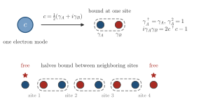

Page 11 of 16 of this session
5.15 Majorana bound states and how to split an electron into two Majoranas
Can a quasiparticle in a material be its own antiparticle? We will now see that every fermion operator can be written with two Majorana operators, each of which is its own Hermitian conjugate. The two halves of an electron are normally bound together, and a superconductor, whose states mix electrons and holes, is where they can come apart.
\[\Psi_{\mathbf{k}} = \begin{pmatrix} c_{\mathbf{k}\uparrow} \\ c_{\mathbf{k}\downarrow} \\ c_{-\mathbf{k}\downarrow}^\dagger \\ -c_{-\mathbf{k}\uparrow}^\dagger \end{pmatrix}, \tag{5.6}\]
This is the Nambu spinor of Section 5.8. It puts the annihilation operators \(c_{\mathbf k\sigma}\) and the creation operators \(c^\dagger_{-\mathbf k\sigma'}\) in one spinor, so an eigenstate of the BdG Hamiltonian is in general a mixture of an electron and a hole.
A Majorana fermion is defined algebraically by the condition that its field operator is equal to its own Hermitian conjugate,
\[\gamma^\dagger = \gamma, \tag{5.16}\]
which means that the creation and the annihilation of the quasiparticle are the same operation, so the particle is its own antiparticle. At first this seems to have no place in an ordinary material, since an ordinary electron is clearly not its own antiparticle (\(c^\dagger \ne c\)), and a semiconductor, for example, never hosts anything of this kind.
However, there is a purely algebraic fact that makes it possible, since any ordinary fermionic operator can be written as a combination of two Hermitian Majorana operators that anticommute with each other.
For a fermion operator \(c\) with \(\{c,c^\dagger\}=1\), the two operators
\[\gamma_A = c + c^\dagger, \qquad \gamma_B = -i\left(c - c^\dagger\right), \tag{5.17}\]
are Majorana operators. Each one is Hermitian and squares to one, \(\gamma_A^2=\gamma_B^2=1\), and the two anticommute, \(\{\gamma_A,\gamma_B\}=0\). The inverse relation (5.18) writes every electron mode as two Majoranas.
So we have \(\gamma_A^\dagger = \gamma_A\), \(\gamma_B^\dagger = \gamma_B\), \(\{\gamma_A,\gamma_B\}=0\) and \(\gamma_A^2=\gamma_B^2=1\), where we used \(\{c,c^\dagger\}=1\). If we invert (5.17), we obtain
\[c = \frac{1}{2}\left(\gamma_A + i\gamma_B\right), \qquad c^\dagger = \frac{1}{2}\left(\gamma_A - i\gamma_B\right). \tag{5.18}\]
The steps From the anticommutator of c to the Majorana algebra (5.17) and (5.18)
We use only \(\{c,c^\dagger\}=cc^\dagger+c^\dagger c=1\) and \(c^2=(c^\dagger)^2=0\). The simplest relation is the conjugate. Since \((c^\dagger)^\dagger=c\), we have \(\gamma_A^\dagger=c^\dagger+c=\gamma_A\) and \(\gamma_B^\dagger=i\left(c^\dagger-c\right)=-i\left(c-c^\dagger\right)=\gamma_B\).
The squares come next,
\[\gamma_A^2=c^2+cc^\dagger+c^\dagger c+(c^\dagger)^2=1,\qquad \gamma_B^2=-\left(c^2-cc^\dagger-c^\dagger c+(c^\dagger)^2\right)=1.\]
For the anticommutator we need the two products,
\[\gamma_A\gamma_B=-i\left(c^2-cc^\dagger+c^\dagger c-(c^\dagger)^2\right)=-i\left(c^\dagger c-cc^\dagger\right),\qquad \gamma_B\gamma_A=-i\left(cc^\dagger-c^\dagger c\right),\]
which are opposite, so \(\{\gamma_A,\gamma_B\}=0\). With \(cc^\dagger=1-c^\dagger c\) the first product also gives \(i\gamma_A\gamma_B=2c^\dagger c-1\), which is \(-1\) on the empty mode and \(+1\) on the filled mode.
To invert (5.17) we add and subtract the two operators, \(\gamma_A+i\gamma_B=(c+c^\dagger)+(c-c^\dagger)=2c\) and \(\gamma_A-i\gamma_B=2c^\dagger\), which is (5.18).
At first this is only a change of variables, a mathematical trick without new physics. Every electron is always made of two Majorana operators that are tightly bound together into an ordinary fermion, and normally there is no way to observe \(\gamma_A\) or \(\gamma_B\) separately, only their fixed combination \(c\). Superconductors are special because BdG eigenstates are already mixtures of electrons and holes by construction, since the Nambu spinor of Section 5.8 explicitly combines \(c_{\mathbf k\sigma}\) with \(c_{-\mathbf k\sigma'}^\dagger\). So in a superconductor, with the right pairing symmetry and the right geometry, the two Majorana components of an electron can become spatially separated, or deconfined. Then they no longer stay together at one site. This deconfinement is the topic of the rest of this section.

Which statement about the operators \(\gamma_A=c+c^\dagger\) and \(\gamma_B=-i(c-c^\dagger)\) of (5.17) is correct?
\[\gamma_A = c + c^\dagger, \qquad \gamma_B = -i\left(c - c^\dagger\right), \tag{5.17}\]
Show the answers
- A. ✓ True
This is true. Using \(\{c,c^\dagger\}=1\) we get \(\gamma_A^2=\gamma_B^2=1\) and \(\{\gamma_A,\gamma_B\}=0\) from (5.17). On the empty mode \(\gamma_A\gamma_B\) gives \(i\) and \(\gamma_B\gamma_A\) gives \(-i\).
- B. ✗ False
This is false. We have \(\gamma_A^2=c^2+c^{\dagger2}+cc^\dagger+c^\dagger c=0+0+1=1\). Applied twice on the empty mode, \(\gamma_A|0\rangle=|1\rangle\) and \(\gamma_A|1\rangle=|0\rangle\), which is not zero.
- C. ✗ False
This is false. On the empty mode we get \(\gamma_A\gamma_B|0\rangle=i|0\rangle\) and \(\gamma_B\gamma_A|0\rangle=-i|0\rangle\). They differ by a sign, so the two operators anticommute.
The electron mode is empty. What is the value of \(i\gamma_A\gamma_B\)?
Show the answers
- A. ✓ True
This is true. Inserting (5.17) gives \(i\gamma_A\gamma_B=2c^\dagger c-1\). The empty mode has \(c^\dagger c=0\), so the value is \(-1\).
\[\gamma_A = c + c^\dagger, \qquad \gamma_B = -i\left(c - c^\dagger\right), \tag{5.17}\]
- B. ✗ False
This is false. The value \(+1\) belongs to the filled mode, where \(c^\dagger c=1\) gives \(2-1=+1\). The empty mode has \(c^\dagger c=0\) and gives \(-1\).
- C. ✗ False
This is false. The operator \(i\gamma_A\gamma_B\) squares to one, since \(\gamma_A^2=\gamma_B^2=1\) and they anticommute. Its eigenvalues are therefore \(\pm1\), and zero is never found.
A fermion mode has \(\{c,c^\dagger\}=1\) and \(c^2=0\). Which operator is Hermitian and squares to one?
Show the answers
- A. ✗ False
This is false. It is Hermitian, but \((c^\dagger c)^2=c^\dagger c\), which gives \(0\) on the empty mode and not \(1\). It is the occupation number, with the eigenvalues \(0\) and \(1\).
- B. ✓ True
This is true. Its conjugate is \(c^\dagger+c\), which is itself, and its square is \(cc^\dagger+c^\dagger c=1\), since \(c^2=0\). It is the Majorana operator \(\gamma_A\).
- C. ✗ False
This is false. Its conjugate is \(c^\dagger-c\), which is minus itself, and its square is \(-cc^\dagger-c^\dagger c=-1\). Multiplied by \(i\) or by \(-i\) it becomes Hermitian, and \(-i(c-c^\dagger)\) is \(\gamma_B\).
Two Majorana operators \(\gamma_A\) and \(\gamma_B\) of one fermion mode are coupled by
\[H=\frac{i\varepsilon}{2}\,\gamma_A\gamma_B,\]
with \(\varepsilon>0\). Use \(i\gamma_A\gamma_B=2c^\dagger c-1\) to find the levels of \(H\) and the energy between them. Evaluate them for \(\varepsilon=0.2\).
Solution
With \(i\gamma_A\gamma_B=2c^\dagger c-1\), which the steps above derive from (5.17), the Hamiltonian is
\[H=\frac{\varepsilon}{2}\left(2c^\dagger c-1\right)=\varepsilon\,c^\dagger c-\frac{\varepsilon}{2}.\]
The empty mode has the energy \(-\varepsilon/2\) and the filled mode the energy \(+\varepsilon/2\). The two states differ by one electron, so they have opposite parity, and the energy between them is \(\varepsilon\). For \(\varepsilon=0.2\) the levels are \(-0.1\) and \(+0.1\), and the energy between them is \(0.2\).
In the Kitaev chain of Section 5.16 the two Majoranas sit at the two ends, and \(\varepsilon\) comes from the overlap of their tails. It is the lowest positive level of the BdG spectrum of the open chain, which Section 5.17 computes, and for 8 sites with \(\Delta=0.5t\) and \(\mu=t\) it is \(0.011t\). So a long chain has two ground states of opposite parity with almost the same energy.
Try it. In the cell, the density of states is computed on the site 0, on L//10 and on L//2. The peak at zero energy is large on the end site, small at L//10 and negligible in the middle. It is the half of a split electron that sits at that end.
- In Section 5.16 the Kitaev chain binds the Majorana halves of neighboring sites, and one half stays free at each end.
- In Section 5.19 four Majoranas make two ordinary fermion modes, which is the basis of a topological qubit.
- In Section 9.8 a vacancy in a topological superconductor, the class that hosts these Majorana modes, gives a bound state inside the gap.